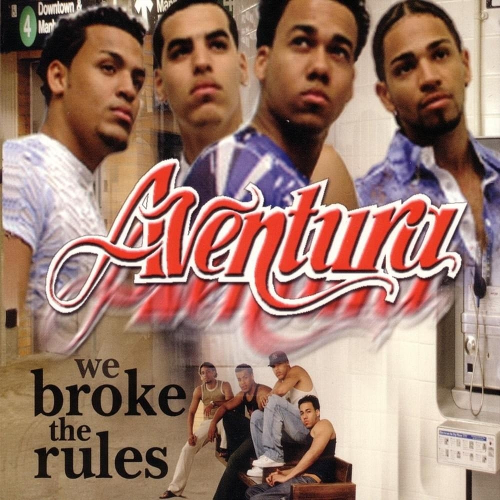

<!DOCTYPE html>
<html lang="es">
<head>
    <meta charset="UTF-8">
    <meta http-equiv="X-UA-Compatible" content="IE=edge">
    <meta name="viewport" content="width=device-width, initial-scale=1.0">
    <link rel="stylesheet" href="css/style.css">
    <title>AVENTURA</title>
</head>
<body>
    
</body>
</html>
        
	<main>
		<header>
				
				<div class="clear"></div>
		</header>
		<nav>
			<ul>
				<li><a href="index.html">Inicio</a></li>
				<li><a href="integrantes.html">Integrantes</a></li>
				<li><a href="discografia.html">Discografía</a></li>
			</ul>
		</nav>
		<section>
			<h2>CREACION</h2>
			<p class="colorFuente"><b>AVENTURA:</b> En el 1993, Lenny Santos y su hermano Max Santos formaron La Banda Sueño. El cantante principal del grupo en ese momento era un amigo cercano que no era bueno. Lenny y Max estaban buscando un cantante que pudiera ayudarlos a tomar su carrera musical más en serio. Lenny no conocía a nadie en su vecindario que supiera cantar. Más tarde conoció a Anthony Santos a través de uno de los músicos del grupo llamado Ronny Fernández, que asistió a la misma escuela que Anthony. Hicieron clic instantáneamente y los dos comenzaron a trabajar juntos en canciones. Anthony era un cantante y compositor que cantaba con su primo Henry en el coro de su iglesia local. Anthony luego le presenta a Lenny a su primo Henry, quien también se une al grupo. El grupo actuaría para sus vecinos, en las bodegas y en las calles de forma gratuita en el Bronx. El grupo decidió cambiar el nombre a Los Tinellers en alusión a teenagers en inglés. </p>
			<article>
				
			</article>
			<p id="parrMarco">fue una agrupación estadounidense de bachata fundada por Anthony "Romeo" Santos, Lenny Santos, Max Agende Santos y Henry Santos. Son considerados como uno de los grupos latinos más influyentes de todos los tiempos.[cita requerida] El grupo fue parte integral de la evolución de la música bachata y son los pioneros del sonido moderno de la bachata. Aventura lanzó cinco álbumes de estudio en una década, creando muchos éxitos como "Cuando Volverás", "Un Beso", "Mi Corazoncito", "Los Infieles", "El Perdedor", "Por Un Segundo", "Dile Al Amor". ", entre otros. Han vendido muchas arenas, incluido el mundialmente famoso Madison Square Garden. Aventura ha sido nominado a premios como los American Music Awards, los Latin Grammy Awards, los Billboard Latin Music Awards y el Premio Lo Nuestro. Aventura es uno de los grupos latinos más reconocidos internacionalmente de las últimas dos décadas y con frecuencia se refieren a sí mismos como "K.O.B." o "Los Reyes de la bachata".</p>
			<div class="clear"></div>
			<p>El estilo musical de Aventura está compuesto primordialmente de fusiones musicales con base en la bachata dominicana; como los miembros de esta agrupación fueron criados en los Estados Unidos, su estilo musical ha sido influenciado por los ritmos populares que se escuchan allí: hip hop, pop, R&B, y posteriormente Reguetón..</p>
			<aside>
				<a href="https://es.wikipedia.org/wiki/Aventura_(banda)" target="_blank">Más información</a><br>
				<a href="https://www.youtube.com/watch?v=PyBA93hiDNI&t=1499s">Ver Videos</a>
			</aside>
		</section>
		<footer>
			<p id="textFooter">Página realizada por Meliza Rodriguez &copy; Todos los derechos reservados</p>
		</footer>
  </main>
</body>
</html>